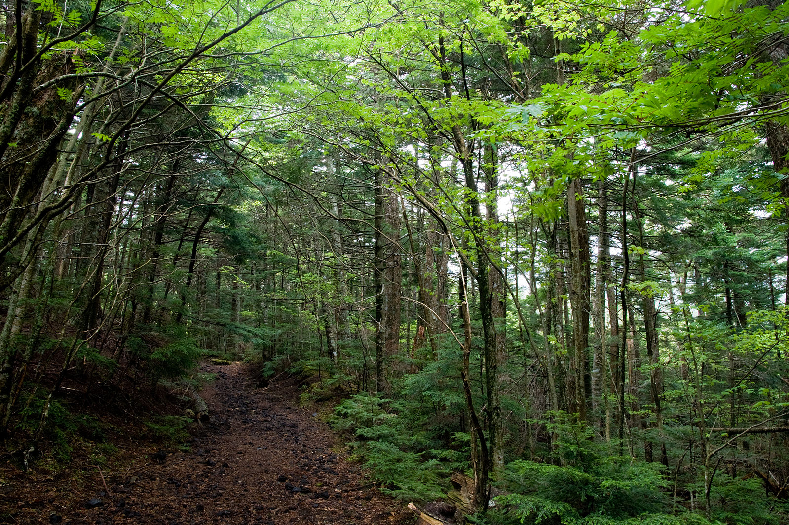

山頂は最暖月の8月でも平均気温が6℃しかなく、ケッペンの気候区分では最暖月平均気温が0℃以上10℃未満のツンドラ気候に分類される。太平洋側の気候のため1月や2月は乾燥し、3月、4月、5月、6月が最深積雪トップ10を占める。観測史上最低気温は－38.0℃で最高気温が－30℃未満の日も過去に数回観測されていて－30℃を上回ることがない1日というのは北海道でも例がない。
気候
植生
富士山は標高は高いが、日本の他の高山に比較すると高山植物などの植生に乏しい。これは富士山が最終氷期が終了した後に山頂から大規模な噴火が繰り返したために山の生態系が破壊され、また独立峰であるため、他の山系からの植物の進入も遅れたためである。しかし、宝永山周辺ではいくらか高山植物が見られる。山の上部ではタデ科オンタデ属のオンタデ（御蓼）、山腹ではキク科アザミ属のフジアザミ（富士薊）が自生している。中部山岳地帯の高山の森林限界の上にはハイマツ帯が広がっているのが通例であるが、富士山にはハイマツ帯は欠如し、その代替にカラマツ林が広がっている。
三合目付近の森（北西斜面、標高1800m）
五合目付近のカラマツ林（北西斜面 奥庭、標高2300m）